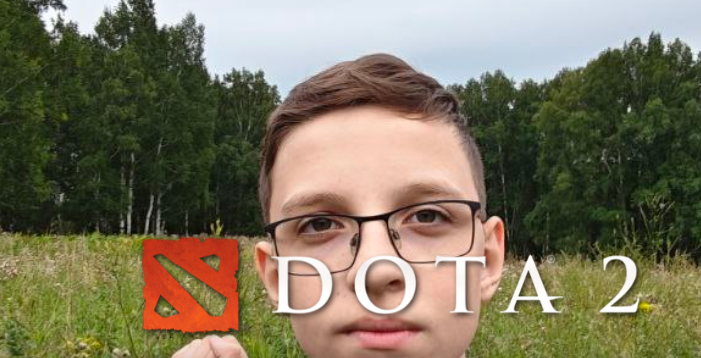

Зелёний орк - Потерянный киберспортсмен в игре Dota 2 который ещё недавно играл за команду Team spirit.
А сейчас уже сидит на скамейке запасных после того, что собрался в керри на crystal maiden на The International.
На данный момент, зелёний орк по имени Федя, играет в роблокс и не желает возвращаться в киберспорт по Dota 2.
По словам Фёдора Захаркина: "Я сейчас настроен играть в роблокс и создавать игры в роблоксе,
возвращаться в эту парашу я не желаю, так что стяни ебало, гейб.".